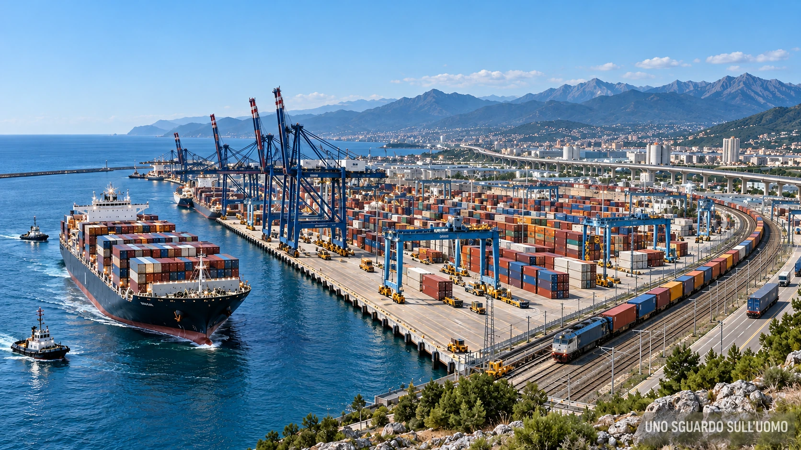

Mentre il mondo continua a misurare la propria sicurezza sul Canale di Suez, sul Mar Rosso e sullo Stretto di Hormuz, tra i ghiacci si sta formando una seconda architettura del commercio mondiale. La Rotta marittima settentrionale russa e la Via della Seta polare cinese stanno convergendo. L'Organizzazione del Trattato dell'Atlantico del Nord (NATO) risponde organizzando sorveglianza, capacità militare e controllo degli accessi occidentali. L'Italia, apparentemente lontana dall'Artico, è già dentro questa costruzione con la Marina Militare, la ricerca, lo spazio, l'industria e una rete di porti e ferrovie che collega Atlantico, Europa, Balcani e Mediterraneo.
In questo dossier
- La fragilità delle rotte meridionali
- Una strada da costruire
- La geografia impone la cooperazione
- Russia e Cina hanno già cominciato
- La NATO prepara il lato occidentale
- La pace con la Russia
- Il Mediterraneo cambia funzione
- La strategia italiana nella regione artica
- La filiera industriale italiana
- Cinque corridoi per collegare i porti
- Genova e la direttrice atlantica
- Il Mezzogiorno diventa piattaforma
- Il Ponte completa la rete
- Il governo Meloni e la direzione delle opere
- Oggi come allora
- La presenza italiana
- Fonti
Il cambiamento non riguarda soltanto il percorso delle navi. Riguarda chi costruirà i mezzi, produrrà i dati, certificherà la sicurezza, proteggerà i passaggi e distribuirà le merci. Il governo Meloni ha collocato l'Artico dentro una strategia nazionale e, contemporaneamente, sta portando avanti le infrastrutture che possono trasformare l'Italia in una piattaforma del nuovo sistema. La pace con la Russia diventa così una condizione economica del passaggio successivo: senza una normalizzazione rimane una rotta russo-cinese; con una normalizzazione può nascere una rotta mondiale.
La fragilità delle rotte meridionali
Suez ha concentrato per oltre un secolo una parte essenziale dei traffici tra Asia ed Europa. Questa efficienza ha creato anche una dipendenza. Una nave che parte dall'Oceano Indiano deve attraversare una catena di passaggi esposti alle crisi del Golfo, del Mar Rosso e del Mediterraneo orientale. Hormuz, Bab el Mandeb e Suez sono luoghi distinti, ma appartengono allo stesso sistema di vulnerabilità: una guerra regionale, una milizia, un attacco alle infrastrutture o la chiusura di un passaggio possono aumentare tempi, premi assicurativi e costo delle merci in tutto il mondo.
La deviazione intorno al Capo di Buona Speranza dimostra quanto costi non avere un'alternativa. Le navi percorrono migliaia di miglia nautiche in più, impiegano più giorni, consumano più carburante e immobilizzano capitale e capacità di trasporto. L'apertura dell'Artico risponde a questa debolezza. Non elimina Suez e non cancella il Mediterraneo. Distribuisce il rischio e impedisce che un solo sistema di colli di bottiglia possa condizionare l'intera economia mondiale.
Una strada da costruire
Il ritiro stagionale dei ghiacci non crea automaticamente una rotta commerciale. Servono carte nautiche affidabili, previsioni meteorologiche, rompighiaccio, porti di assistenza, comunicazioni satellitari, soccorso marittimo, certificazioni, assicurazioni e sorveglianza. L'Artico presenta pericoli tecnici che non scompaiono con il riscaldamento: ghiaccio mobile, nebbia, oscurità, temperature estreme, fondali non completamente conosciuti e distanze enormi dai centri di intervento.
Il vantaggio economico nasce quando questo insieme diventa stabile. Per diverse coppie di porti fra Asia settentrionale ed Europa settentrionale, la Rotta marittima settentrionale può ridurre sensibilmente la distanza rispetto a Suez. Meno miglia significano meno carburante e una nave disponibile prima per un nuovo viaggio. Il beneficio, però, dipende dalla stagione, dal tipo di nave, dal costo dell'assistenza e dalla possibilità di attraversare il sistema senza interruzioni politiche. La competizione in corso riguarda proprio la trasformazione di questa possibilità in una infrastruttura permanente.
La geografia impone la cooperazione
Nessuna potenza controlla l'intero percorso. La Cina possiede i volumi commerciali, i capitali e una parte decisiva della capacità cantieristica mondiale, ma non possiede una costa artica utile alla Rotta marittima settentrionale. La Russia controlla il lungo tratto costiero, dispone di porti, basi e rompighiaccio, ma non può estendere la propria sovranità all'intero corridoio. A est le navi incontrano lo Stretto di Bering e gli Stati Uniti. A ovest entrano nel Mare di Barents e nell'Atlantico settentrionale, circondati in larga parte da territori della NATO.
La rotta può quindi funzionare soltanto come sistema multipolare. La cooperazione tecnica non cancella la competizione strategica. Russia, Cina e Paesi occidentali possono condividere regole di navigazione, soccorso e prevenzione degli incidenti mentre si contendono accessi, dati, standard e influenza. Il Codice polare dell'Organizzazione marittima internazionale stabilisce già requisiti comuni per progettazione delle navi, addestramento degli equipaggi, operazioni e protezione dell'ambiente. Anche avversari geopolitici devono evitare che un incidente renda impraticabile la strada dalla quale sperano di ricavare vantaggio.
| Attore | Risorsa decisiva | Obiettivo |
|---|---|---|
| Russia | Costa artica, porti, basi e rompighiaccio | Valorizzare e presidiare la Rotta marittima settentrionale |
| Cina | Merci, capitali, cantieri e domanda di trasporto | Collegare la Via della Seta polare ai mercati europei |
| NATO | Territori occidentali, sorveglianza e capacità militari | Proteggere gli accessi ed evitare un controllo esclusivo russo-cinese |
| Italia | Tecnologie, cantieristica, porti e corridoi europei | Collegare la nuova direttrice al Mediterraneo e alla rete continentale |
Russia e Cina hanno già cominciato
Il 12 ottobre 2026 Wang Yi ha incontrato a Pechino Nikolai Patrushev, consigliere del presidente russo e presidente del Consiglio marittimo della Federazione Russa. Il Ministero degli Esteri cinese ha scritto che la Via della Seta polare promossa da Pechino corrisponde agli sforzi russi per sviluppare la Rotta marittima settentrionale. Mosca ha indicato la disponibilità a rafforzare la cooperazione sul Corridoio di trasporto transartico e sulla governance marittima multilaterale.
Questa dichiarazione colloca la rotta dentro la strategia fra le due potenze. La Cina ottiene un collegamento più breve e meno esposto ai passaggi meridionali; la Russia trasforma la propria costa settentrionale in una fonte di reddito, infrastrutture e influenza. Igor Sechin, amministratore delegato di Rosneft, ha legato esplicitamente la crisi di Hormuz alla necessità di sviluppare la Rotta marittima settentrionale, indicando una possibile riduzione dei tempi di consegna e dei costi. Il significato politico è chiaro: ogni crisi nel sistema meridionale aumenta il valore dell'alternativa settentrionale.
La Cina non entra nell'Artico come semplice cliente. Porta traffico sufficiente a rendere economicamente credibile il corridoio e mira a partecipare alla definizione delle sue regole. La Russia conserva il vantaggio geografico e operativo. La loro cooperazione crea l'asse orientale della nuova strada.
La NATO prepara il lato occidentale
Nel febbraio 2026 l'Organizzazione del Trattato dell'Atlantico del Nord (NATO) ha avviato Arctic Sentry, una attività multidominio destinata a riunire esercitazioni, forze e capacità degli alleati nel Grande Nord. La motivazione dichiarata riguarda l'aumento dell'attività militare russa e il crescente interesse cinese. Sette degli otto Stati artici appartengono oggi alla NATO: Canada, Danimarca, Finlandia, Islanda, Norvegia, Stati Uniti e Svezia.
Nel giugno 2026 la NATO ha poi creato Task Force X Arctic. La nave da ricerca Alliance è partita da La Spezia, è condotta dalla Marina Militare italiana e lavora con il Centre for Maritime Research and Experimentation (CMRE), il centro NATO di ricerca marittima con sede nella stessa città. Il programma mette in rete osservazione spaziale, comando e controllo e mezzi autonomi di superficie, subacquei e aerei. Le prime prove si sono svolte intorno all'Islanda; la dimostrazione completa è prevista nel 2027.
Poche settimane dopo, sotto guida operativa italiana, Task Force X Central Mediterranean ha sperimentato in Puglia oltre cento sistemi autonomi e sensori nei domini marittimo, terrestre, aereo, spaziale e cibernetico. La NATO presenta questa attività come sviluppo dei modelli artico e baltico. I due estremi della nostra indagine sono così collegati dalla stessa architettura: il Grande Nord viene osservato e protetto con tecnologie che l'Italia contribuisce a sperimentare anche nel Mediterraneo centrale.
Russia e Cina stanno costruendo la direttrice commerciale. La NATO prepara il sistema occidentale di sicurezza. L'Italia opera nel punto in cui queste trasformazioni raggiungono il Mediterraneo.
La pace con la Russia
Una grande rotta commerciale non vive soltanto di navi. Ha bisogno di pagamenti, assicurazioni, accesso ai porti, manutenzione, scambio di dati e investimenti prevedibili. La guerra in Ucraina e il sistema di sanzioni spezzano questi collegamenti. La Russia e la Cina possono sviluppare un loro corridoio; l'Occidente può rafforzare il proprio perimetro; l'Europa può preparare le proprie infrastrutture. Senza una normalizzazione, i segmenti restano separati.
Per questa ragione la pace con la Russia assume un valore che supera l'Ucraina e l'energia. Diventa l'infrastruttura politica necessaria a trasformare la Rotta marittima settentrionale in un corridoio realmente mondiale. Il riavvicinamento fra Donald Trump e Vladimir Putin acquista così una dimensione economica e strategica. Washington ha interesse a chiudere un conflitto che consuma risorse, impedisce nuovi accordi e mantiene l'Europa legata alla logica della precedente contrapposizione. Mosca ha interesse a reinserire il proprio territorio nella circolazione globale di capitali, tecnologie e merci.
Senza la pace esiste una rotta russo-cinese. Con la pace può nascere una rotta mondiale.
Essere amici della Russia non significa soltanto acquistare gas o petrolio. Significa partecipare alla configurazione del corridoio che può ridisegnare una parte del commercio fra Asia ed Europa. La condanna politica pronunciata oggi non impedisce un cambiamento domani. Può anzi preparare l'opinione pubblica a una inversione che apparirà improvvisa soltanto a chi continua a leggere gli eventi separatamente.
Il Mediterraneo cambia funzione
L'Artico non sostituisce il Mediterraneo. Ne modifica la posizione dentro la rete mondiale. Le merci provenienti dall'Asia lungo la direttrice settentrionale possono raggiungere i porti del Mare del Nord, proseguire via ferro verso il continente oppure scendere nell'Atlantico ed entrare nel Mediterraneo attraverso Gibilterra. Suez continua a servire le rotte dell'Oceano Indiano, del Golfo e del Mediterraneo orientale. Gibilterra acquista peso come porta occidentale di un sistema più diversificato.
La Turchia dipende in misura maggiore dalla continuità di Suez perché Gibilterra è lontana dai suoi porti e dai traffici del Mediterraneo orientale. Ankara ha quindi un interesse diretto alla stabilità del Mar Rosso e dei passaggi meridionali. Arabia Saudita, Iran, Israele e gli altri attori regionali restano centrali perché le loro scelte possono condizionare energia e navigazione. La disponibilità di una via settentrionale riduce la capacità di una crisi locale di assoggettare l'intero sistema mondiale.
L'Italia possiede interessi in entrambe le direzioni. Deve proteggere gli alleati e i traffici del Mediterraneo e, nello stesso tempo, partecipare alla costruzione del corridoio artico. La sua posizione non è una scelta fra nord e sud. È la capacità di collegare i due spazi.
La strategia italiana nella regione artica
Il governo italiano ha formalizzato questa presenza nel documento La Politica Artica Italiana, preparato nel 2025 e presentato il 16 gennaio 2026. Le tre direttrici indicate sono sicurezza, ricerca scientifica e sviluppo economico. Il testo richiama la tutela degli interessi economici e industriali nazionali, la sicurezza euro-atlantica, l'osservazione della Terra, le comunicazioni satellitari, la protezione delle infrastrutture critiche e l'aumento della conoscenza operativa.
Il documento non crea dal nulla la presenza italiana. La organizza. L'Italia è osservatore nel Consiglio Artico dal 2013, mantiene la base Dirigibile Italia alle Svalbard, svolge campagne scientifiche e idrografiche e partecipa ai programmi NATO e dell'Unione europea. La novità sta nella convergenza fra queste attività e una visione nazionale che riconosce l'Artico come spazio di sicurezza e opportunità economica.
Nel luglio 2026 la nave Alliance ha avviato da Tromsø la decima campagna High North sotto il comando operativo dell'Istituto Idrografico della Marina. I rilievi dei fondali, le osservazioni ambientali e la collaborazione fra Marina, CMRE, Consiglio nazionale delle ricerche, Agenzia nazionale per le nuove tecnologie, l'energia e lo sviluppo economico sostenibile (ENEA) e università italiane producono una conoscenza indispensabile alla navigazione. L'Italia contribuisce quindi alla costruzione fisica della strada prima che il traffico raggiunga la piena maturità.
La filiera industriale italiana
Fincantieri, attraverso la controllata norvegese Vard, progetta e costruisce navi ice class, rompighiaccio e unità specializzate. La Commandant Charcot, consegnata nel 2021, è una nave Polar Class 2 con propulsione ibrida e capacità rompighiaccio. La crescita della navigazione polare richiederà scafi rinforzati, propulsioni specifiche, navi di ricerca, mezzi di assistenza e nuove unità militari. La cantieristica italiana può ricavare valore dalla rotta prima ancora che un container raggiunga un porto nazionale.
La Costellazione di piccoli satelliti per l'osservazione del bacino del Mediterraneo (COSMO-SkyMed) e le competenze di e-GEOS e Telespazio forniscono immagini radar ad alta risoluzione anche attraverso nuvole, nebbia e oscurità. Questi dati servono a seguire i ghiacci, scegliere i passaggi, rilevare inquinamento e sorvegliare infrastrutture. Leonardo possiede capacità nei radar, nello spazio, nelle comunicazioni, nel comando e controllo e nella gestione delle emergenze. Il Registro Italiano Navale (RINA) offre classificazione ice-class, verifica dei progetti e certificazione secondo il Codice polare.
La filiera è quasi completa: Fincantieri costruisce la nave, RINA ne verifica la conformità, COSMO-SkyMed osserva il ghiaccio, e-GEOS elabora i dati, Leonardo protegge comunicazioni e operazioni, la Marina cartografa i fondali e i porti italiani ricevono o redistribuiscono le merci. L'Italia non possiede coste artiche, ma possiede una parte delle tecnologie necessarie a rendere commerciale l'Artico.

Cinque corridoi per collegare i porti
Nel 2024 il nuovo regolamento della rete transeuropea dei trasporti (TEN-T) ha portato da quattro a cinque i grandi corridoi che attraversano l'Italia. Il negoziato condotto dal Ministero delle infrastrutture e dei trasporti (MIT) ha consolidato il corridoio Scandinavo Mediterraneo, il Mediterraneo, il Mare del Nord Reno Mediterraneo e il Baltico Adriatico, aggiungendo il corridoio Balcani occidentali Mediterraneo orientale.
La nuova configurazione prolunga la dorsale Baltico Adriatica fino a Bari, inserisce il collegamento Trieste Lubiana, apre la direttrice Bari Durazzo Skopje Sofia, porta Civitavecchia nella rete centrale e comprende il nuovo tracciato del Ponte sullo Stretto di Messina. La penisola non è più soltanto attraversata da linee nord sud. Diventa un incrocio fra Atlantico, Europa centrale, Balcani e Mediterraneo.
Questa trasformazione consente all'Italia di intercettare il traffico artico in due modi. Le navi possono scendere lungo l'Atlantico e attraversare Gibilterra, oppure le merci possono essere scaricate nei porti settentrionali e raggiungere l'Italia attraverso la rete ferroviaria europea. Nella direzione opposta, gli stessi corridoi portano verso il mare le esportazioni italiane, balcaniche e centroeuropee.
Genova e la direttrice atlantica
La nuova diga foranea di Genova offre l'immagine più concreta del cambiamento. Non viene costruita soltanto per sostituire una struttura esistente. Viene collocata su fondali naturali che raggiungono i cinquanta metri, creando lo spazio necessario all'ingresso e alla manovra delle grandi portacontainer. La scala dell'opera corrisponde alla scala delle navi che domineranno il commercio dei prossimi decenni.
Il Terzo Valico dei Giovi collega il sistema portuale ligure a Milano, alla Svizzera e al corridoio Mare del Nord Reno Mediterraneo. Nel giugno 2026 è terminato lo scavo della galleria di ventilazione del Polcevera. Nel gennaio dello stesso anno il governo ha approvato il progetto esecutivo del tunnel subportuale di Genova, aprendo la fase della gara. Diga, porto, nodo ferroviario e Terzo Valico formano un'unica macchina logistica capace di trasferire le merci dalla nave alla rete europea.
Il Mezzogiorno diventa piattaforma
Gioia Tauro ha chiuso il 2025 sfiorando 4,5 milioni di unità equivalenti a venti piedi (TEU), il massimo storico, con una crescita del 14 per cento. Il traffico ferroviario è passato da meno di trecento treni nel 2024 a circa mille nel 2025. Il porto, nato soprattutto per il transhipment, sta costruendo la capacità di immettere le merci nella rete terrestre. Il MIT ha destinato circa 140 milioni di euro a elettrificazione, consolidamento, intermodalità e digitalizzazione.
Ad Augusta è in costruzione un terminal destinato alle mega portacontainer con 576 metri di banchine e circa 127.000 metri quadrati di piazzali. Nel 2024 è stato approvato l'adeguamento tecnico del piano portuale; nel 2025 sono state recuperate due grandi gru rimaste ferme per anni, con l'obiettivo di aumentare fortemente la capacità di carico e scarico. Il collegamento ferroviario alla rete nazionale trasforma lo scalo siciliano da infrastruttura isolata a terminale del sistema continentale.
Bari completa la proiezione verso i Balcani. Il nodo ferroviario in costruzione, finanziato per 459 milioni di euro, prevede il quadruplicamento di alcuni tratti e il passaggio da dieci a venti treni l'ora. Attraverso Durazzo, Skopje e Sofia, il porto pugliese diventa una porta dell'Europa sudorientale. Trieste e Venezia svolgono la stessa funzione verso l'Europa centrale e il bacino danubiano.
Il Ponte completa la rete
Il Ponte sullo Stretto acquista senso dentro questa architettura. Il nuovo regolamento europeo lo colloca sul corridoio Scandinavo Mediterraneo. L'accordo di programma del 2026 coordina la costruzione dell'opera con gli interventi di Rete ferroviaria italiana e dell'Azienda nazionale autonoma delle strade statali. Il collegamento stabile unisce Augusta, Palermo, Catania e Messina alla Calabria, a Gioia Tauro, alla penisola e al sistema europeo.
Il Ponte è già stato analizzato in un dossier dedicato. Qui conta la sua funzione nella nuova rete: senza continuità ferroviaria i porti siciliani rimangono separati dal continente; con la continuità diventano terminali meridionali di una direttrice che raggiunge la Scandinavia e può intersecare il traffico proveniente dall'Artico.
Il governo Meloni e la direzione delle opere
Molte infrastrutture sono state progettate in epoche differenti. Il loro valore politico non dipende soltanto dalla data del primo progetto. Dipende da chi le finanzia, le sblocca, le adatta, le collega e le porta alla fase operativa. Il governo Meloni ha negoziato la nuova mappa TEN-T, inserito il Ponte nel tracciato europeo, sostenuto l'espansione dei porti, fatto avanzare i collegamenti ferroviari e presentato una strategia nazionale per l'Artico.
Il governo italiano sta realizzando le infrastrutture portuali, ferroviarie e logistiche necessarie al potenziamento marittimo del Paese. Il governo Meloni, ultimando queste opere, potrà presumibilmente preparare l'Italia alle nuove rotte commerciali tra Artico, Atlantico, Gibilterra e Mediterraneo.
Il punto non è attribuire retroattivamente ogni idea al governo attuale. Il punto è riconoscere la direzione impressa alla rete. Porti più profondi, banchine per mega navi, ferrovie merci, collegamenti con i Balcani, continuità verso la Sicilia e presenza tecnologica nell'Artico corrispondono alla stessa necessità: fare dell'Italia un Paese capace di ricevere, produrre ed esportare lungo più direttrici.
In questa prospettiva si comprende meglio anche il rapporto fra Giorgia Meloni e Donald Trump. L'Italia offre stabilità politica, posizione mediterranea, industria della difesa, relazioni con il mondo arabo e una presenza concreta nelle attività artiche della NATO. Non è più soltanto il Paese al quale gli alleati chiedono fedeltà. Può diventare il Paese che rende possibile una parte del nuovo collegamento fra sicurezza atlantica e Mediterraneo.
Oggi come allora
Venezia e Genova non controllavano ogni territorio attraversato dalle merci asiatiche. La loro potenza nasceva dalla capacità di presidiare le interfacce: porti, flotte, credito, assicurazioni, trattati e distribuzione verso l'Europa. Quando le rotte oceaniche cambiarono il commercio mondiale, cambiò anche la gerarchia delle potenze. La geografia rimase la stessa; mutarono le reti che le attribuivano valore.
Il parallelismo con le repubbliche marinare non pretende di sovrapporre due epoche. Serve a riconoscere un meccanismo. L'Italia contemporanea può essere centrale senza possedere l'Artico perché può costruire navi, produrre dati, certificare mezzi, proteggere comunicazioni e collegare porti e mercati. Il controllo moderno non coincide con la sovranità su tutta la strada. Consiste nella capacità di rendersi indispensabili al suo funzionamento.
Essere presenti nella fase costruttiva significa partecipare alla futura distribuzione della ricchezza. Chi definisce oggi tecnologie, standard, collegamenti e sicurezza sarà in posizione migliore quando il traffico diventerà ordinario. Questa è la posta economica della politica artica italiana.
La presenza italiana
La nuova Via della Seta artica non è ancora una rotta equivalente a Suez per volumi e regolarità. È però già un progetto politico, commerciale e militare. Russia e Cina hanno dichiarato la convergenza delle loro strategie. La NATO ha avviato Arctic Sentry e Task Force X Arctic. L'Italia ha aggiornato la propria politica nazionale, conduce missioni nel Grande Nord, sperimenta tecnologie, amplia porti e inserisce la propria rete in cinque corridoi europei.
Il Mediterraneo rimarrà centrale perché continuerà a collegare Europa, Africa, Medio Oriente e Atlantico. La sua forza futura dipenderà dalla capacità di integrarsi con la nuova direttrice settentrionale. L'Italia si prepara a farlo attraverso Gibilterra, i porti tirrenici, l'Adriatico, i Balcani e la continuità ferroviaria verso il continente.
L'Italia non sta aspettando il nuovo ordine mondiale. Sta costruendo le infrastrutture necessarie per occuparvi una posizione centrale.
La pace con la Russia, la sicurezza dell'Artico, la stabilizzazione del Mediterraneo e il potenziamento delle infrastrutture italiane appartengono allo stesso cambiamento. Non occorre che le grandi potenze diventino alleate. È sufficiente che riconoscano il valore superiore di una strada funzionante rispetto a una strada distrutta. L'Italia ha compreso che il momento decisivo viene prima del passaggio delle merci: è il momento in cui si costruiscono le condizioni per farle passare.
FONTI
- Ministero degli Affari Esteri e della Cooperazione Internazionale, La Politica Artica Italiana, 16 gennaio 2026.
- Ministero degli Affari Esteri e della Cooperazione Internazionale, Dal Mediterraneo al Grande Nord, la proiezione strategica dell'Italia nel nuovo scacchiere artico, 19 maggio 2026.
- Ministero degli Affari Esteri e della Cooperazione Internazionale, L'Italia e l'Artico, aggiornamento 2026.
- Ministero degli Esteri della Repubblica Popolare Cinese, Wang Yi Meets with Russian Presidential Aide and Chairman of the Maritime Board Nikolai Patrushev, 14 ottobre 2026.
- Rosneft, intervento di Igor Sechin sul valore della Rotta marittima settentrionale nel nuovo contesto energetico, 4 settembre 2026.
- Organizzazione del Trattato dell'Atlantico del Nord, NATO Secretary General outlines new activity Arctic Sentry, 11 febbraio 2026.
- Organizzazione del Trattato dell'Atlantico del Nord, Arctic security, aggiornamento 24 luglio 2026.
- Organizzazione del Trattato dell'Atlantico del Nord, NATO launches Task Force X Arctic to strengthen awareness in the Arctic and the High North, 6 giugno 2026.
- Allied Command Transformation, Task Force X Arctic, 2026.
- Allied Command Transformation, Task Force X Central Mediterranean, giugno 2026.
- NATO Intelligence Surveillance and Reconnaissance Force, supporto a Neptune Strike 26 3 nel Grande Nord, 2026.
- Organizzazione marittima internazionale, International Code for Ships Operating in Polar Waters.
- Ambasciata d'Italia a Oslo, Visita del Sottosegretario di Stato alla Difesa Isabella Rauti in Norvegia, 14 luglio 2026.
- Fincantieri, Vard delivered Le Commandant Charcot to Ponant, 2 agosto 2021.
- RINA, Arctic navigation and ice class ship design, 13 marzo 2026.
- Ministero delle infrastrutture e dei trasporti, Consiglio dell'Unione europea, adozione definitiva del nuovo Regolamento TEN-T, 13 giugno 2024.
- Ministero delle infrastrutture e dei trasporti, Terzo Valico completata la nuova galleria di ventilazione del Polcevera, 23 giugno 2026.
- Ministero delle infrastrutture e dei trasporti, Genova approvato il progetto esecutivo del Tunnel Subportuale, 2 gennaio 2026.
- Osserva Cantieri del Governo italiano, Genova Realizzazione della Diga Foranea, consultazione ottobre 2026.
- Autorità di Sistema Portuale dei Mari Tirreno Meridionale e Ionio, Gioia Tauro sfiora i 4,5 milioni di TEU, 13 gennaio 2026.
- Autorità di Sistema Portuale dei Mari Tirreno Meridionale e Ionio, Dal primato nel transhipment alla sfida di diventare il grande hub logistico d'Italia, 30 luglio 2026.
- Ministero delle infrastrutture e dei trasporti, Porto di Augusta realizzazione di un nuovo terminal containers, aggiornamento marzo 2024.
- Autorità di Sistema Portuale del Mare di Sicilia Orientale, Porto di Augusta recupero delle gru per il terminal contenitori, 3 marzo 2025.
- Ministero delle infrastrutture e dei trasporti, Nodo ferroviario di Bari strategico, 12 giugno 2025.
- Ministero delle infrastrutture e dei trasporti, Accordo di programma per il collegamento stabile tra Sicilia e Calabria, 24 aprile 2026.